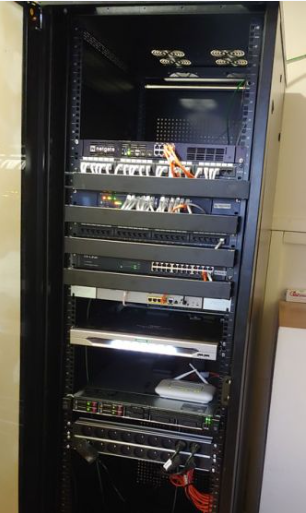
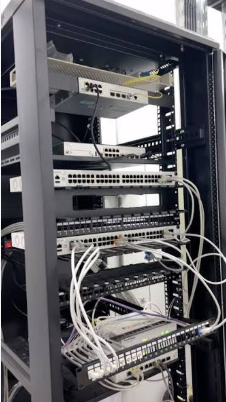
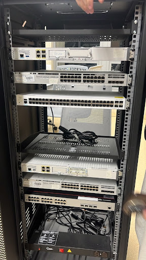

Fuente de verdad
1Un inventario de referencia
DASHBOARD TÉCNICO
Del bastidor al cableado estructurado
CABLEADO ESTRUCTURADO
Visualización de la infraestructura física, lógica y eléctrica del Laboratorio de Redes y Telecomunicaciones.
Estudiante: Samuel Sierra Garcia · Actualización:
El dashboard utiliza archivos HTML, CSS, JavaScript y JSON. Para cargar el inventario inicial, abre el proyecto con Live Server.
Fuente de verdad
1Un inventario de referencia
Capas relacionadas
3Física, lógica y eléctrica
Datos falsos
0No se deben inventar datos técnicos
01 / APRENDIZAJE
El cableado estructurado permite organizar las conexiones y los equipos de una red. La identificación correcta de cada elemento facilita el mantenimiento, la administración y la detección de fallas.
Ubicar cada equipo en su unidad U y documentar su posición.
Registrar nombres, modelos, conexiones y datos disponibles.
Mantener el inventario actualizado y conservar copias de respaldo.
02 / INFRAESTRUCTURA
Ubicación U, nombre del equipo, modelo y ocupación del rack.
Ejemplo: U25 · Cisco ISR 4331VLAN, dirección IP y función de red cuando están documentadas.
Ejemplo: VLAN 10, 20 y 30Alimentación y relación con la PDU. Los datos deben verificarse físicamente.
Ejemplo: PDU QuestANSI/TIA-606 para la administración e identificación de la infraestructura y ANSI/TIA-568 para el cableado de telecomunicaciones. La aplicación concreta debe verificarse según el alcance de cada norma.
03 / PROCEDIMIENTO
Los resultados de las pruebas deben corresponder a lo verificado en el navegador y en los archivos del proyecto.
04 / VISTA FÍSICA
Selecciona una unidad ocupada para consultar los datos del equipo. Las unidades de un equipo de varias U se representan en una sola tarjeta.
CONSULTA
Selecciona un equipo del rack o de la tabla.
05 / EVIDENCIAS
Fotografías de los racks de comunicaciones y del componente eléctrico del Laboratorio de Redes.

Vista del primer rack de comunicaciones.

Vista del segundo rack de comunicaciones.

Componente eléctrico del rack.
06 / ADMINISTRACIÓN
Agrega equipos nuevos o selecciona un equipo registrado para editarlo. Comprueba la ubicación física antes de registrar cambios.
Los cambios se guardan en este navegador y no se sincronizan automáticamente con GitHub ni con otros usuarios. Exporta el JSON para guardar una copia.
07 / REGISTRO
| Ubicación | Equipo | Modelo | Estado | Acciones |
|---|
08 / APOYO DIGITAL
La inteligencia artificial puede ayudar a organizar la documentación, revisar el código y detectar posibles inconsistencias. La información técnica debe contrastarse con el inventario y con la infraestructura real.
Revisa un dashboard de inventario de un rack de 28U. Verifica la estructura de HTML, CSS, JavaScript y JSON; comprueba que no haya ubicaciones superpuestas y separa los datos físicos, lógicos y eléctricos. No inventes modelos, VLAN, direcciones IP ni evidencias fotográficas.
09 / CONTROL DE VERSIONES
El repositorio contiene el código y el historial de versiones del proyecto. Los cambios guardados en el navegador no modifican por sí solos los archivos del repositorio.
Consulta los archivos, commits y versiones publicadas.
github.com/samu080901/trabajo10 / CONSULTA
Medida vertical utilizada para expresar la altura de equipos de rack.
Red de área local virtual que permite segmentar una red lógica.
Dirección utilizada para identificar una interfaz dentro de una red IP.
Unidad de distribución de energía eléctrica para equipos.
Archivo estructurado que almacena la configuración del rack y sus equipos.
Las fuentes son referencias generales. Para una entrega técnica, consulta la versión aplicable de cada norma y verifica los datos del laboratorio con evidencia real.